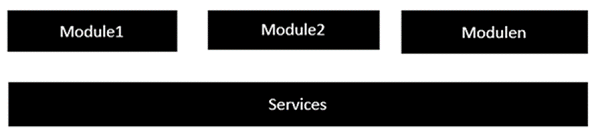
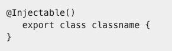

<main class="pageinter">
  <section class="container">
    <div class="row">
      <div class="col-lg-12">
        <div class="titpage">
          <h1>Services</h1>
        </div>
        <p>Um Service é usado quando uma funcionalidade comum precisa ser fornecida a vários módulos. Por exemplo, poderíamos ter uma funcionalidade de banco de dados que poderia ser reutilizada entre vários módulos. E, portanto, você pode criar um serviço que pudesse ter a funcionalidade do banco de dados.</p>

        

        <p>As seguintes etapas principais precisam ser realizadas ao criar um serviço.</p>

        <p>Passo 1 - Crie uma classe separada que tenha o decorador injetável. O decorador injetável permite que a funcionalidade desta classe seja injetada e usada em qualquer módulo Angular JS.</p>

        

        <p>Passo 2 - Em seguida, no seu módulo appComponent ou no módulo no qual você deseja usar o serviço, você precisa defini-lo como um provedor no decorador @Component.</p>

        


      </div>
    </div>
    
  </section>
</main>
